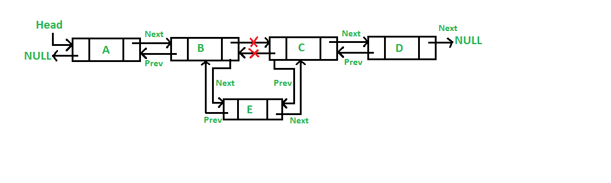
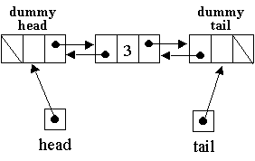
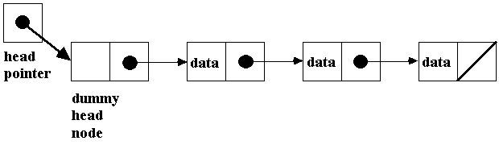
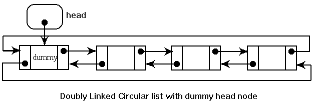

List implementations
Sample codeClasses: ArrayList / SinglyLinkedList
(non-generic ArrayList)
Interface: List
These are simplified implementations of ArrayList / LinkedList / List from the JCF.
ArrayList
ArrayList is an array implementation of the List interface. It has a size and a capacity. The size is the number of elements currently being used. The capacity is the amount of space currently allocated (in terms of number of elements). When it runs out of space, it copies the elements into a new larger array.- The ArrayList(int capacity) constructor creates an empty list (i.e. the size is 0).
- When growing the array, we increase the capacity by a constant factor.
LinkedList
LinkedList is a doubly-linked list implementation of the List interface.- We do not allow the user to access or create nodes because we should not reveal implementation details to the user (an example of encapsulation). From the user's point of view, he/she is adding or removing elements, not nodes. The Node class is private and nested because a Node only exists as part of a LinkedList.
- This implementation uses a dummy node (aka sentinel) to slightly simplify the code (the JCF implementation does not use a dummy node).
- The JCF implementation is doubly-linked, so when accessing an element by index, traversal begins from whichever end is closer to the target index.

Doubly linked list. Source: geeksforgeeks.org

Doubly linked list insertion. Source: geeksforgeeks.org

Doubly-linked list with dummy nodes.
Source: condor.depaul.edu/ntomuro

Singly-linked list with dummy node. Source: web.cecs.pdx.edu/~karlaf

Source: ironbark.xtelco.net.au